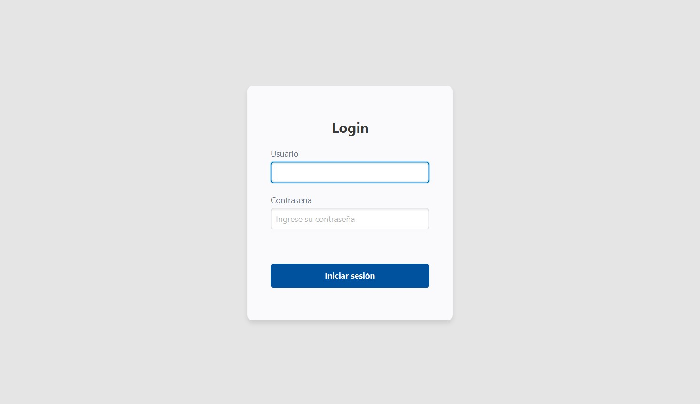
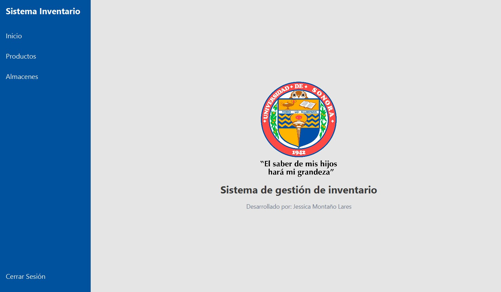
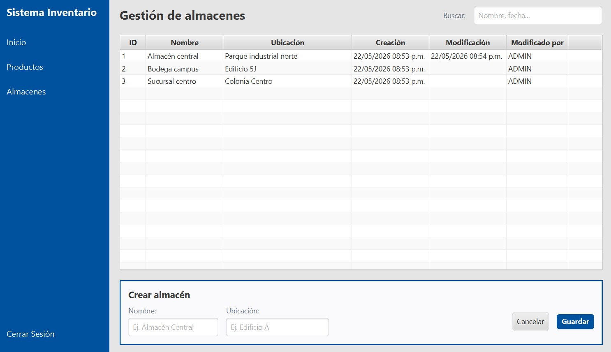
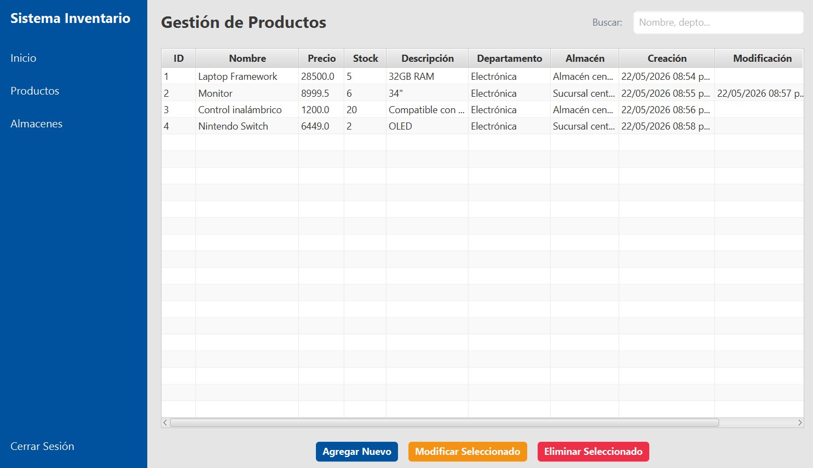

- Java
- JavaFX
- JUnit
- SQLite
Sistema de gestión de inventario
Proyecto de reingeniería y mantenimiento de un sistema de gestión de inventario. Realizado para la materia de Administración de Proyectos Informáticos II.